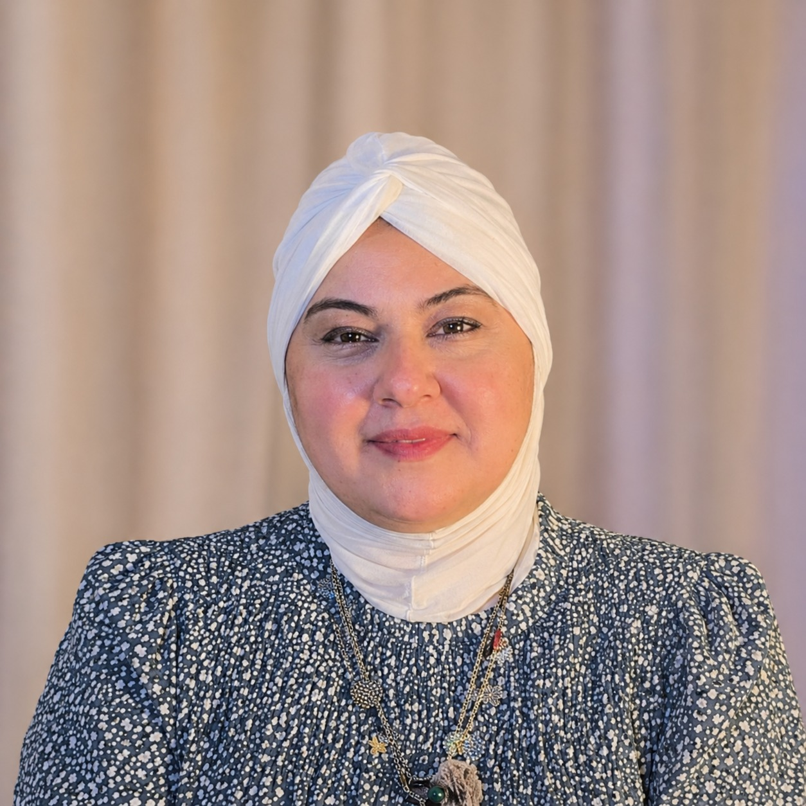

ورشة تفاعلية عبر Zoom
رحلة اعتماد ICF
لو برجع حضّر لاعتمادي، كنت بطلب من حدا يسمع ليش اخترت هالجواب.
لأنّه حتى لو جاوبت صح، في فرق بين «حسّيت هيدا الأنسب» و«فهمت شو عم يطلب العميل بهاللحظة». أنا علا طرابيه، وهيدا اللي حابّة نشتغل عليه سوا.
خلال 6 ساعات، بتجرّب أسئلة لمسارك، ومنراجع منطق إجاباتك. بتطلع عارف شو بدّك تقوّي بجلساتك، وشو بعد ناقص بملفّك قبل التقديم.
احجز مقعدك الآن عبر واتساب
شو رح تاخد معك من «رحلة اعتماد ICF»؟
محاكاة وتقييم لإجاباتك
بتحلّ أسئلة بحسب امتحانك، ACC أو PCC. منناقش ليش خيار أقرب من التاني، وين كان تحليلك دقيق، وشو بدّك تراجع.
اختبار للكفاءات وتمارين جلسات
بتختبر فهمك لكفاءات ICF وبتطبّقها على مواقف من جلسات الكوتشينغ، لتعرف أي مهارة بدك تتمرّن عليها وكيف.
خريطة لمسارك وقائمة تدقيق لملفّك
بتميّز بين ساعات Core وRD وبتراجع شو بينحسب لمسارك. بترتّب خطوات التقديم والسجلات المطلوبة، وبتحدّد إذا بدّك تسجيل جلسة وتفريغها نصّيًا.
- خطة ليوم الامتحان. بتتدرّب على تنظيم الوقت وتهدئة التوتر، وبتعرف كيف تجهّز مكانك والتقنيات المطلوبة بحسب طريقة تقديمك.
- مسوّدة تعريف بنيشك. بتمرين بيربط خبرتك بحاجة جمهورك، بتكتب أوّل جواب إلك عن «مين بساعد، وبشو بساعده؟»
أسئلة المحاكاة من إعداد الورشة وليست أسئلة ICF الرسمية.
ليش تشارك بالجلسة؟
جرّب تمرين من نوع اللي منناقشه سوا
بنصّ جلسة، قال العميل «كل ما جرّب قول لأ، بتراجع». أي سؤال بتختار لتستكشف معه شو بيصير بهاللحظة؟
- شو بيخطر ببالك باللحظة اللي بتقرّر فيها تتراجع؟
- شو رأيك نتمرّن سوا على جملة تقول فيها لأ؟
شوف الفرق بين السؤالين
السؤال الأوّل بيترك للعميل مساحة يكتشف شو بيصير معه قبل ما يتراجع. التاني بينتقل مباشرةً لتمرين عملي. ممكن يفيده إذا طلب يتدرّب، بس بهالموقف هدفنا بعده الاستكشاف. هيدا مثال توضيحي من إعداد الورشة.
رسوم التسجيل
اشتراكك بيشمل اللقاءين المباشرين مع وقت لأسئلتك، تسجيل اللقاءين وملفات العمل. للحجز، ابعتلي كلمة «حجز» على واتساب.